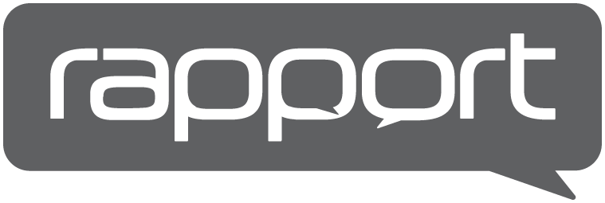
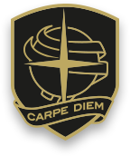

DIGIS SQUARED / AI PRODUCT ENGINEER
KATANA autonomy
Closed-loop reasoning for network autonomy. Technical strategy, Bayesian architecture and the path from Level 1 to Level 4.
Product engineering & technical strategyOMAR ABOELELLA / AI PRODUCT ENGINEER
I turn complex workflows into useful AI products. Multi-agent systems, business automation and data-driven decisions—from the mathematical model to the working software.
Omar AboelellaAI product engineer · LondonGet to know me ↗EXPERIENCE ACROSS ENGINEERING, MARKETS, SERVICE & EDUCATION

Professional experience
Southfields AcademyMaths & physics teachingStudying Computer Science & Mathematics at Birkbeck, University of London.
Experience & full CV ↗What brings you here?
01 Business automation ↗02 Projects & engineering work ↗03 Online Maths & Science lessons ↗01 / SELECTED WORK
DIGIS SQUARED / AI PRODUCT ENGINEER
Closed-loop reasoning for network autonomy. Technical strategy, Bayesian architecture and the path from Level 1 to Level 4.
Product engineering & technical strategyA connected learning experience. Across web and mobile.
FOUNDER / MULTI-AGENT WEB & MOBILE APP
A multi-agent study platform spanning web, iOS and Android. A substantial product bringing conversational AI and learning into one cross-platform experience.
Pre-launch · approximately 150 beta usersUnderstand the network. Improve the system.
DIGIS SQUARED / NETWORK SYSTEMS
Network testing and optimisation products deployed to O2. Work rooted in network systems and the integration of hardware and software.
Network engineering · products deployed to O2MATHEMATICALLY CURIOUS. PRACTICALLY MINDED.
I study Computer Science & Mathematics at Birkbeck, University of London. My work connects product engineering, data, research and education.
I’m fascinated by how we make better decisions: in an AI system, in a financial market, or at the moment a student finally understands.
02 / WHAT I BRING TO YOUR TEAM
I connect AI engineering, mathematical reasoning and product delivery to turn an operational problem into a system people can use.
Explore six areas of expertise
Tell me what your team is trying to do. We can start with the problem—not a finished specification.
03 / MATHEMATICS IS THE COMMON LANGUAGE
From Bayesian reasoning to quantum information, I’m drawn to the mathematics beneath how we learn, compute and make decisions.
Explore my research interests ↗04 / ACADEMIC DIRECTION
BSc at Birkbeck, University of London.
Expected 2028 · targeting First Class Honours.
My longer-term ambition is a PhD, with interests spanning quantitative finance, quantum computing and intelligent systems.
FOR BUSINESSES
Useful automation, connected tools and AI built around your work.
Enter the automation studio ↗FOR CURIOUS MINDS
Online Maths and Science tutoring for A-level and GCSE students.
Build your study brief ↗